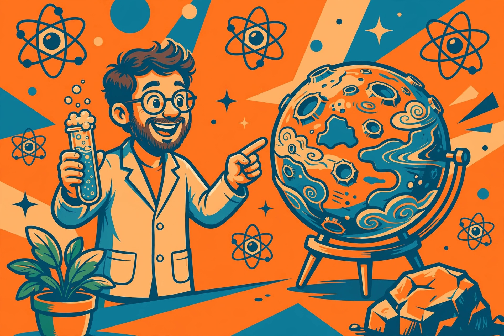

Science dad jokes that make the whole table groan

Science and dad jokes are a natural pairing. Merriam-Webster defines a dad joke as a wholesome joke of the type said to be told by fathers, with a punchline that is often an obvious or predictable pun or play on words. Science supplies an endless stock of words that sound like one thing and mean another — solution, reaction, bond, current, cell — and every one of those double meanings is a punchline waiting for a victim. This collection is organized by branch, so a joke can be matched to whatever a kid is studying, building, or asking about this week.
The sincere part: a science joke does quiet double duty. The groan gets the laugh, but the word stays behind. A child who hears a joke about a solution or a bond has a hook to hang the real meaning on later, which is why the jokes below explain their own wordplay as they go.
Why the pun is the whole mechanism
Researchers who study this format make a useful distinction. Writing for the British Psychological Society, humour researcher Marc Hye-Knudsen defines dad jokes as puns that violate only a linguistic norm and nothing else. A pun works by saying two different things at the same time: ordinary conversation assumes one clear meaning at a time, and the pun breaks that assumption on purpose. Because nothing else is violated — no social rule, no taboo — the result stays inoffensive, which is exactly what makes the format safe around kids. A pun, in the standard definition, exploits multiple meanings of a term, or similar-sounding words, for humorous effect. Science vocabulary is unusually rich in both: words with a laboratory meaning and a kitchen-table meaning, and technical terms that sound like everyday phrases.
That is also why science jokes reward a tiny bit of setup. A joke about a beaker lands when the listener knows what a beaker is; a joke about an orbit lands when the listener has seen a diagram of one. The branch sections below move from the most familiar vocabulary to the least, and the decision framework further down matches each branch to the listeners most likely to get it on the first try.
Chemistry jokes
- Acid at the family reunion? It reacted to absolutely everything.
- Base at the argument? It stayed neutral on purpose.
- Salt's advice to a young chemist? Take every result with a grain of me.
- Beaker finally get a raise? It measured up.
- Oxygen and potassium go on a date? It went OK.
- Chemist bring a pencil to the lab? To draw conclusions.
- Solution get invited to every party? It mixes well with everyone.
- Periodic table go back to school? It wanted to feel elementary again.
- Bunsen burner at the talent show? It really brought the heat.
- Two hydrogens wander off together? The oxygen felt left out of the bond.
The oxygen-and-potassium joke is the one to teach first: the punchline is built from the chemical symbols O and K, so the listener has to hold the symbol and the everyday word in mind at once. That two-meanings-at-once moment is the pun mechanism in miniature, and kids who crack it once start hunting for symbols in every other joke on the page.
Physics and space jokes
- Moon skip dessert? It was already full.
- Comet's driving advice? Never tailgate.
- Gravity win every argument? It always pulls its weight.
- Light pack for a long trip? It travels light.
- Magnet say to the iron filing? I find you very attractive.
- Pendulum at the party? It really got into the swing of things.
- Prism's party trick? It brings out everyone's true colours.
- Black hole at the buffet? It took everything in.
- Orbit describe its relationship? Going around in circles.
- Rocket count before bed? Not sheep — it counts down.
- Telescope feel overlooked? Everyone kept looking right through it.
Biology jokes
- Brain say to the skull? You have been on my mind all day.
- Red blood cell feel tired? It had been running in circles all day.
- Plant cell brag to the animal cell? At least there is a wall between me and my problems.
- Bacteria throw a party? It turned into a real culture.
- Seed's promise to the garden? Give me time — I will grow on you.
- Tree log on in the morning? It wanted to check its messages before breakfast.
- Cactus try to hug? The gesture was a little too pointed.
- Eye joke win at the science fair? Everyone agreed it was cornea.
- Stomach skip the lecture? It could not stomach another one.
- Germ wash its hands? It did not want to catch people.
Earth science jokes
- Volcano finally propose? It erupted with feelings.
- Mountain join the gym? It was training for peak season.
- River arrive late again? It went with the flow and took the scenic route.
- Glacier say to the impatient rock? Give me time — moving slowly is still moving.
- Earthquake at the dance? It really shook things up.
- Sand retire to the beach? It was ready to settle down and stop drifting.
- Fossil enjoy the reunion? It was the oldest one there, and proud of it.
- Tide make a promise? I will be back — I always return.
- Cloud bring an umbrella? It had a feeling it might get emotional.
Joke formats compared
Not every science joke is built the same way, and the format changes who laughs and how much setup the joke needs. This comparison table — built from the jokes in this article — sorts the four formats used above.
| Format | How it works | Example from this page | Best for |
|---|---|---|---|
| Question and answer | A short setup question, then a punning answer | Moon skip dessert? It was already full. | Younger kids; call-and-response energy |
| Symbol wordplay | The punchline depends on a chemical symbol or technical spelling | Oxygen and potassium: it went OK. | Older kids already meeting the periodic table |
| Personified object | A thing from the lab or the sky is given a human mood or motive | The glacier asking for more time | Listeners of any age; no vocabulary needed beyond the object itself |
| Idiom twist | A familiar phrase is read literally in a science setting | The stomach that could not stomach another lecture | Adults and teens who already know the idiom |
The pattern in the table is the pattern in the whole collection: the less the joke depends on a technical term, the younger the listener can be. Question-and-answer and personified-object jokes need almost no background. Symbol wordplay and idiom twists need a listener who already owns the second meaning — which is precisely why they delight older kids, who get to feel clever for catching both.
Picking the right science joke for the audience
Use this decision framework before deploying a joke. Three questions, in order:
- What words does the listener already own? If the science word is new this week, pick a joke that uses it in a personified-object format — the joke teaches the word instead of testing it. If the word is old news, symbol wordplay and idiom twists become fair game.
- What is the occasion? At the dinner table, one joke at a time, with the double meaning explained if it sails past. In a classroom doorway or a science-fair lineup, short question and answer jokes work best because they need no quiet room. On a long car ride, chain jokes by branch and let passengers guess the branch before the punchline.
- What reaction is wanted? A groan means a predictable pun, delivered deadpan. A genuine laugh usually needs the format one level above the listener's expectation — an idiom twist for a teen, a symbol joke for a student who just met the periodic table.
Applied together: a seven-year-old who planted seeds last week gets the seed's promise and the cactus hug. A twelve-year-old with a chemistry set gets OK, the beaker, and the two hydrogens. A teenager gets the stomach lecture and the orbit's relationship status — and the eye-roll confirms the framework worked.
How to deliver a science joke
- Set the scene in one plain sentence: name the object or the word before the joke starts.
- Ask the setup question slowly, then pause a full beat before the punchline.
- Say the punchline flatly, without laughing first — the deadpan is what makes it a dad joke.
- If the joke lands silently, unpack the double meaning in one line and tell it once more.
- Stop at one or two jokes per occasion. Scarcity is what keeps the groan affectionate.
What success looks like: a groan, an eye-roll, or — the highest honour — the listener retelling the same joke at the next meal as if it were their own discovery.
FAQ
Are these jokes suitable for a classroom? Yes. Dad jokes are, by the British Psychological Society's account, inoffensive puns that violate only a linguistic norm, which is why the format is described as wholesome and appropriate around kids. Every joke here is clean and kind.
Why do some science jokes fall flat with younger kids? Usually the second meaning is missing. A pun needs the listener to hold two meanings at once; if the science word itself is unfamiliar, explain the word first, then retell. The format comparison above shows which formats need the least background.
Where does the term dad joke come from? Merriam-Webster records the first known use of the term in 1987, and the dictionary added its definition in 2019 — a wholesome joke with an obvious or predictable pun, judged endearingly corny.
Can a listener make up new ones? That is the real game. Pick any science word with an everyday twin — current, charge, mass, matter — state a tiny scene, and let the second meaning be the punchline. The framework above is the recipe.